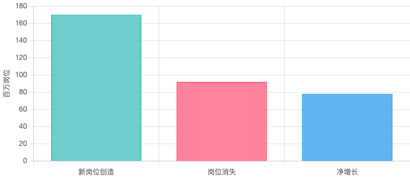
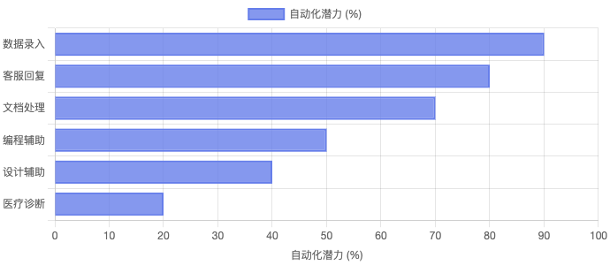
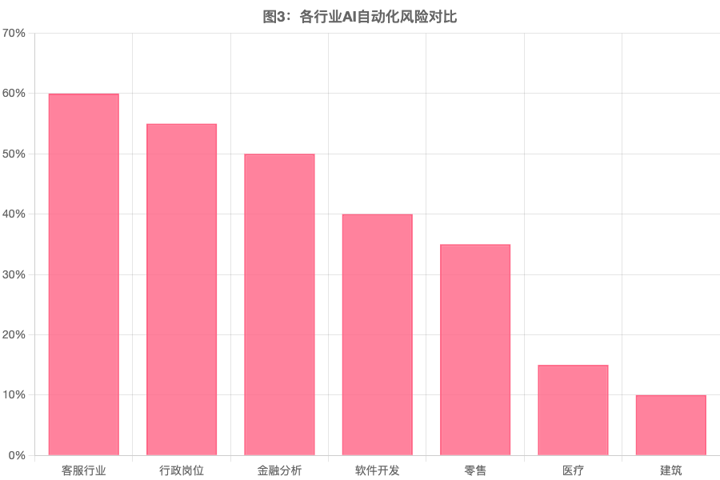
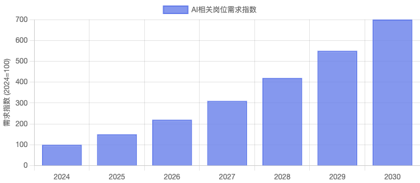
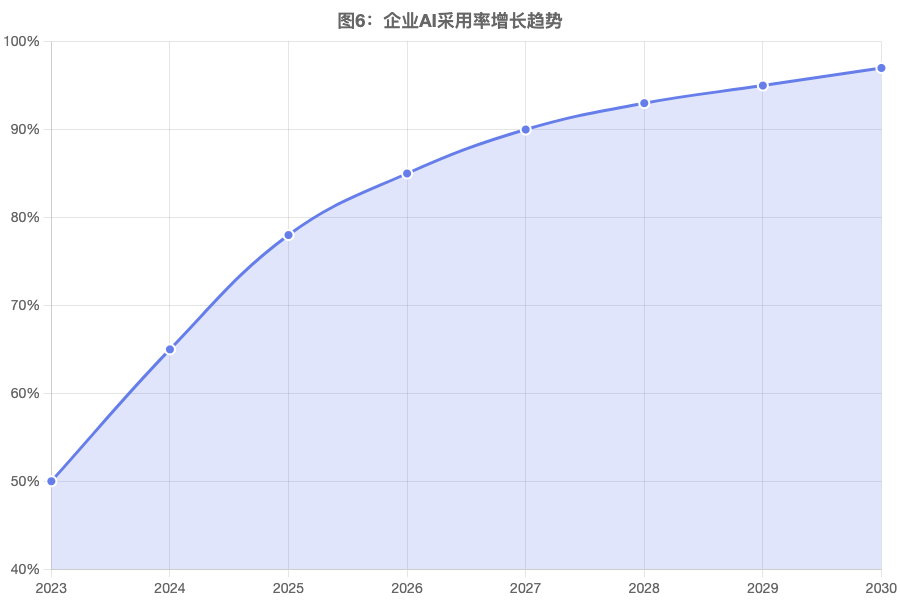

AI就业革命：2026-2035趋势报告

一、报告摘要
过去两年，生成式人工智能（Generative AI）迅速进入商业应用阶段。OpenAI、Anthropic、Google、Meta等科技公司推出的大模型系统，使AI能够处理复杂语言、代码、数据分析以及部分决策任务。
这项技术正在引发自工业革命以来最大规模的就业结构变化。
|
1.7亿
新岗位将被创造（到2030年）
|
9200万
岗位将消失（到2030年）
|
|
7800万
就业净增长
|
22%
工作将被重新定义
|
AI对就业的影响主要体现在三个方面：
- 岗位替代：重复性、规则性工作被AI自动化
- 岗位创造：AI工程师、提示词工程师等新岗位涌现
- 岗位增强：AI成为工具，提升人类工作效率

图1：2025-2030年全球就业市场变化预测（数据来源：WEF）
二、技术背景：生成式AI突破
2022-2025年，AI技术实现重大突破：
- 2022年11月：OpenAI发布ChatGPT，用户量在2个月内突破1亿
- 2023年：GPT-4、Claude、Google PaLM等大模型相继发布
- 2024年：多模态AI（文本、图像、视频、代码）成为主流
- 2025年：AI Agent（智能体）开始进入企业应用
McKinsey 2025年调研显示，65%的组织已经在使用生成式AI，78%的组织在至少一个业务职能中部署AI。
三、哪些工作最容易被AI替代？
Anthropic最新研究（基于Claude大模型使用数据）发现，高薪白领工作受AI影响最大，而非传统认为的低技能工作。
高风险职业（自动化潜力 >70%）
- 数据录入员：90%自动化潜力
- 客服代表：80%自动化潜力
- 文档处理：70%自动化潜力
- 初级程序员：50%自动化潜力
- 平面设计师：40%自动化潜力

图2：不同任务的AI自动化潜力评估
四、行业自动化风险分析
根据OECD数据，不同行业的自动化风险差异显著：

图3：各行业自动化风险对比（数据来源：OECD）
五、企业如何应用AI？
McKinsey 2025调研显示，企业主要在以下领域应用AI：

图4：AI生产力价值在不同业务领域的分布
5.1 实际应用案例
- 客服：AI聊天机器人处理70%常规咨询
- 营销：AI生成个性化营销文案和广告素材
- 代码：GitHub Copilot等工具提升开发效率50%
- 数据分析：AI自动生成报告和洞察
六、新岗位创造
AI在消灭旧岗位的同时，也在创造大量新岗位：
新兴AI岗位类型
- AI工程师：开发、训练、优化AI模型
- 提示词工程师：设计和优化AI提示词
- AI产品经理：将AI技术转化为产品
- 数据标注师：为AI训练标注数据
- AI伦理专家：确保AI应用符合伦理标准
LinkedIn数据显示，2025年AI相关岗位需求比2024年增长150%，预计到2030年将增长600%。

图5：AI相关岗位需求增长趋势预测
七、裁员潮与AI
2024-2025年，科技行业出现多轮裁员潮，许多企业明确表示AI是裁员原因之一：
2024-2025年科技行业裁员案例
- IBM：暂停招聘可能被AI替代的后台岗位（约7,800个）
- Google：2024年裁员，部分团队因AI工具而精简
- Amazon：客服和配送部门因AI自动化而裁员
- Microsoft：2025年裁员，将AI整合到更多业务中
八、AI不会替代，会用AI的人会替代
AI不是简单的替代关系，而是增强关系。会用AI工具的人将取代不会用的人。
vs
不会使用AI的人
如何学会与AI协作？
- 1. 学习使用AI工具：ChatGPT、Claude、GitHub Copilot等
- 2. 掌握提示词工程：学会如何与AI有效沟通
- 3. 培养AI思维：理解AI能做什么、不能做什么
- 4. 关注人机协作：让AI放大你的能力，而非威胁你的工作
九、未来十年趋势（2026-2035）
未来十年就业将出现三大变化趋势：
📊 1. 工作极化（Job Polarization）
就业结构将分化为两极：
- 高技能AI岗位：AI工程师、数据科学家、AI产品经理等
- 低技能服务岗位：护理、餐饮、建筑等需要人际接触或体力的工作
中等技能岗位（如传统白领工作）将面临最大的AI替代风险。
🎯 2. 技能升级（Skill Upgrading）
未来关键技能：
- AI工具使用：会使用AI的人 vs 不会使用AI的人
- 数据分析：数据驱动决策能力
- 创新能力：AI难以替代的创造性思维
- 情感智力：人际沟通、同理心、领导力
🤝 3. 人机协作（Human-AI Collaboration）
未来工作模式：Human + AI，而不是 Human vs AI
成功的关键是学会与AI协作，让AI放大人类能力，而不是被AI替代。
AI采用率预测
根据McKinsey的调研数据，AI在企业中的采用呈现快速增长趋势：
- 2024年：65%的组织使用生成式AI
- 2025年：78%的组织在至少一个业务职能中使用AI
- 2026-2030年：AI将成为企业标准配置

图6：企业AI采用率增长趋势预测（2023-2030）
十、结论与展望
AI正在引发第三次就业革命。关键结论：
|
45%
工作任务将被自动化
|
9200万
岗位可能消失
|
|
1.7亿
新岗位将被创造
|
+$4.4T
全球经济价值
|
最终结论：AI不会消灭工作，但会改变工作方式。未来竞争将变成：
会使用AI的人 vs 不会使用AI的人
💡 应对建议：
- 拥抱AI工具：主动学习和使用AI工具提升工作效率
- 培养独特技能：专注于AI难以替代的创造力和情感智力
- 终身学习：持续更新技能，适应快速变化的技术环境
- 关注人机协作：学会与AI协作，让AI成为你的助手而非竞争对手
📚 数据来源与参考资料
1. World Economic Forum - Future of Jobs Report 2025
2. McKinsey - The State of AI: Global Survey 2025
3. Anthropic - Labor market impacts of AI research
4. CNBC - AI job cuts report 2025
5. Challenger, Gray & Christmas - Job Cut Report 2025
6. OECD - Automation Risk by Industry Statistics
7. Goldman Sachs - AI Economic Impact Research
本报告基于公开数据和研究报告编制，仅供参考。数据截至2026年3月。
2026年3月16日 | 研究报告 - 公众号:AI观象录 - 宋子鹏
数据驱动，洞察未来